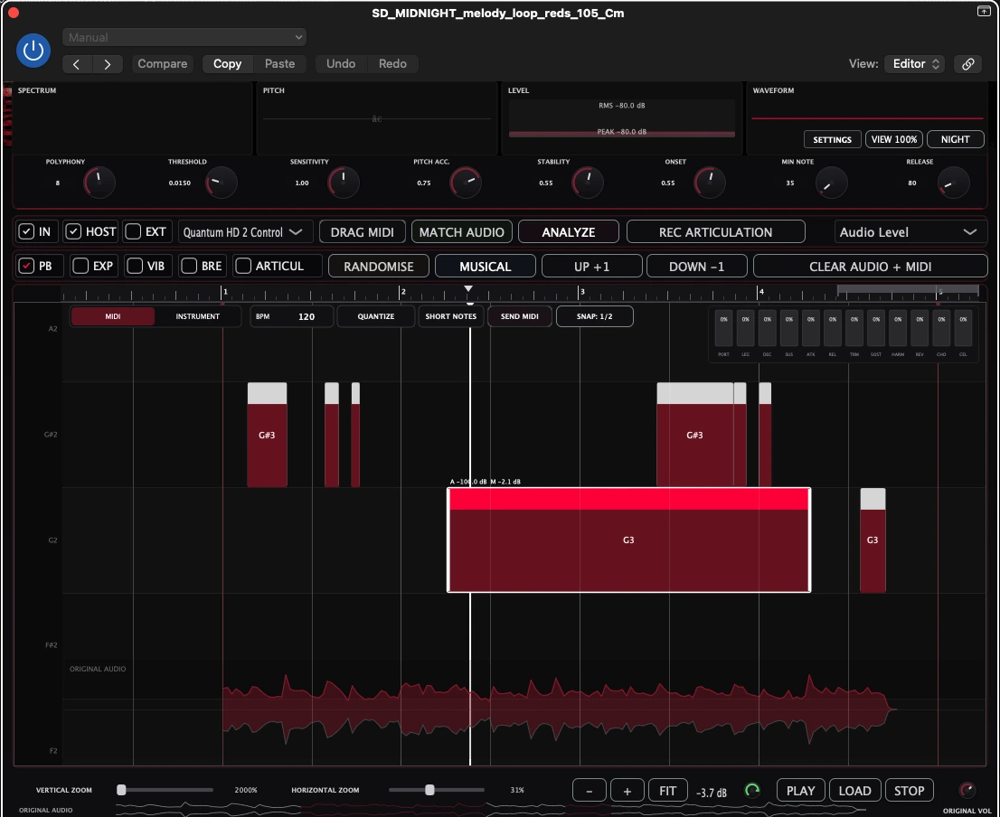
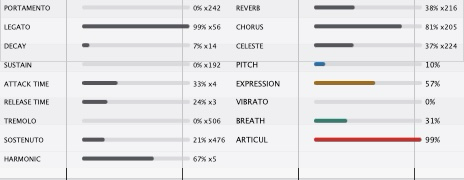
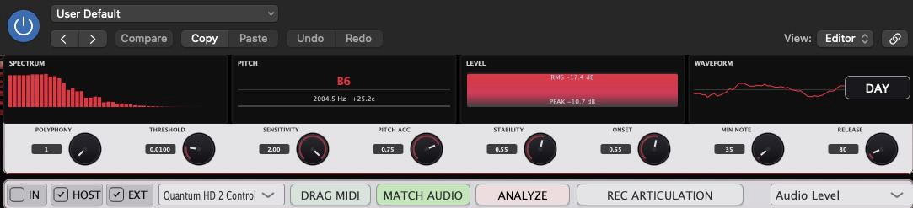
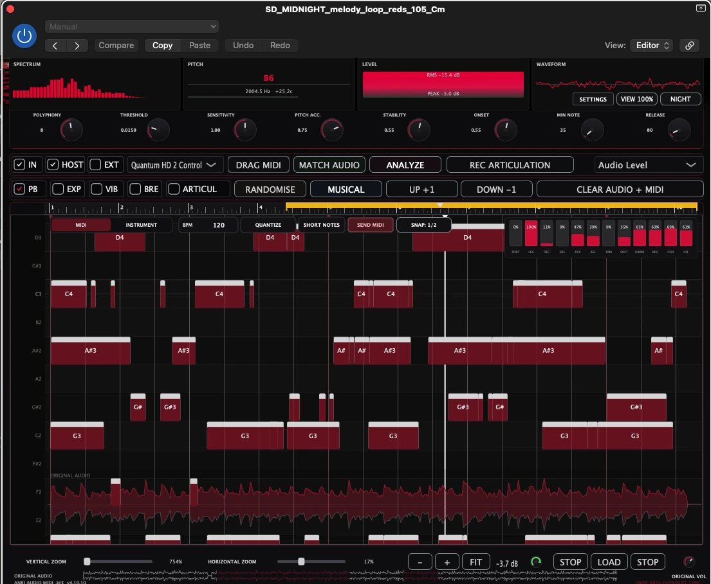
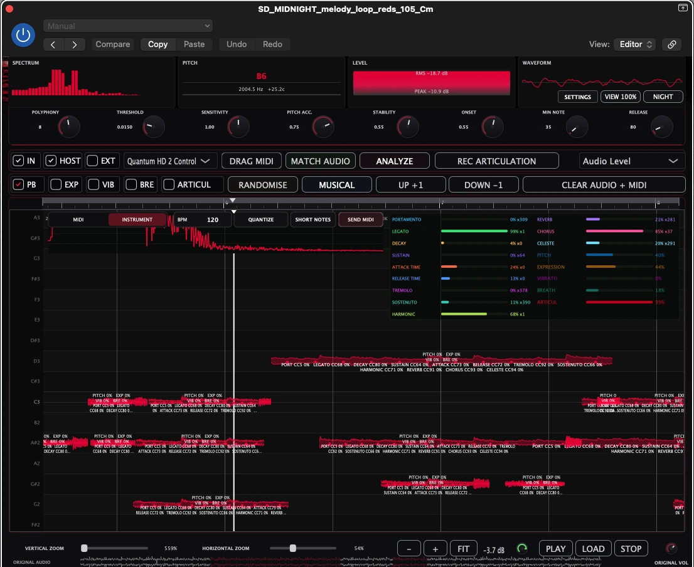

ANALYZE
Бастапқы аудионы талдап, өңделетін MIDI ноталарын алу.
ANRI AUDIO MIDI — музыкалық аудионы өңделетін MIDI ноталарына айналдыруға арналған плагин. Нәтижені Piano Roll терезесінде көріп, түзетіп, Logic Pro жобасына тасымалдаңыз.

Бастапқы аудионы талдап, өңделетін MIDI ноталарын алу.
Ноталарды уақыт пен биіктік торында бастапқы аудиотолқынмен салыстыру.
Ноталарды жылжыту, ұзарту, қосу, жою, velocity мәнін өзгерту және дыбысын тыңдау.
МIDI динамикасын бастапқы орындаудың дыбыс қаттылығына сәйкестендіру.
Ноталардың уақытын ырғақ торына туралау және дәл орналастыру.
Фразаны үлкейтіп не кішірейтіп, ойнату, тоқтату және нақты бөлігін тексеру.
Дайын MIDI ноталарын жобаға тасымалдау немесе Logic Pro арқылы жіберу.
Хост немесе сыртқы MIDI шығысы, MIDI арнасы, транспозиция және ноталар диапазоны.
Randomise, Musical, Up +1 және Down -1 көмегімен жаңа нұсқаларды жасау.
Legato, Tremolo, Pitch, Expression, Vibrato, Breath және Articul параметрлерін көру.
Аудио түріне сәйкес ноталарды анықтау сезімталдығын реттеңіз.
ANRI AUDIO MIDI ноталардың биіктігі мен ұзақтығынан бөлек, бастапқы орындаудың артикуляциясы мен мәнерлілік сипаттамаларын MIDI деректерімен қатар көрсетеді.
MIDI деректерін Logic Pro жобасына тасымалдамас бұрын бастапқы фразаның сипатын қарап шығыңыз: Legato, Portamento, Vibrato, Expression және басқа параметрлер бір панельде берілген.


Плагиннің нақты жұмыс көріністері: бастапқы аудиомен бірге MIDI ноталарын өңдеу, артикуляцияны көру және Piano Roll ішінде нотаны дәл өзгерту.


Бағдарламаны пайдалану лицензиясы үшін біржолғы төлем. Бұл жазылым емес.
Баға АҚШ долларымен көрсетілген. Түпкілікті төлем валютасы мен төлем тәсілдері төлем беті ашылғанда жарияланады.
Сатылым әлі ашылған жоқ. Бұл бет төлемдерді немесе банк картасының деректерін қабылдамайды. Ресми төлем беті провайдер тексеріліп, шығарылым дайын болғаннан кейін қосылады.
Ерікті қолдау төлемдері лицензияны сатып алу болып саналмайды.
Сатылым әзірге ашылған жоқ. Ерікті қолдау төлемдері лицензияны сатып алу немесе алдын ала тапсырыс беру болып саналмайды.
Boosty және PayPal лицензия сату үшін емес, тек ерікті қолдау үшін қолданылады.
ProEducation сыртқы платформасында сатушы — «Анрипрод» ЖК, ал төлемді қабылдайтын ұйым — «ПРО ЭДЮКЕЙШН» ЖШС.
Төлем расталған соң Anri Cloud арқылы лицензия беру жоспарланған. Пошта хабарламалары мен қолжетімділікті қалпына келтіру тексерілуде.
Бұл шарттар әзірге жоспарланып отыр, сату ашылғанға дейін түпкілікті бекітіледі.
Бір лицензияны екі құрылғыда белсендіру және құрылғыларды басқару жоспарланған.
Мерзімсіз лицензия үшін біржолғы төлем. Ақшаны қайтару мен жаңарту ережелері сатылымға дейін жарияланады.
Лицензияны қауіпсіз іздеу және қалпына келтіру әзірленуде; сатып алу құқығы тексеріледі.
macOS: Logic Pro бағдарламасына арналған Audio Unit (AUv2) плагині. Windows VST3: жеке әзірленіп жатыр, қазіргі ұсынысқа кірмейді.
macOS үшін қолтаңбаланған орнатқыш әзірге жарияланған жоқ. Шығарылымнан кейін ресми жүктеу, жүйелік талаптар және белсендіру нұсқаулығы беріледі. Алдын ала тапсырыс, ашық төлем немесе жалпыға қолжетімді сынақ нұсқасы қазір жоқ.
Ерікті қолдау лицензиялық кілт, қосымша мүмкіндіктер, алдын ала тапсырыс не басымдықты қолжетімділік бермейді. Лицензияны сатып алу үшін ресми төлем бетінің ашылуын күтіңіз.
Орнату, белсендіру, лицензияны қалпына келтіру немесе төлемді тексеру сұрақтары бойынша anribitzzz10@gmail.com поштасына жазыңыз. Лицензия кілттерін немесе карта деректерін ерікті қолдау пікірлерінде жібермеңіз.
Техникалық көмек пен әзірлеуді ерікті қолдау — екі бөлек қызмет.
ANRI AUDIO MIDI бағдарламасын Қазақстан Республикасында тіркелген «Анрипрод» ЖК — Безручкин Андрей Александрович әзірлейді және сатуға дайындайды.
ЖСН: 921007301843. Қызмет түрі: ЭҚЖЖ 58290 — өзге бағдарламалық қамтамасыз етуді шығару.
Заңды мекенжай мен байланыс деректері: Сатушы туралы мәліметтер.
Жоқ. Төлем тәсілі тексеріліп, орнатқыш қолтаңбаланғаннан кейін сату ашылады.
Жоқ. Жоспарланған баға — мерзімсіз лицензия үшін бір рет 39 USD.
Windows VST3 бөлек әзірленуде. Қазіргі жоспарланған нұсқа macOS AUv2 және Logic Pro жүйесіне арналған.
Ресми байланыс арналарын немесе электрондық поштаны қолданыңыз.